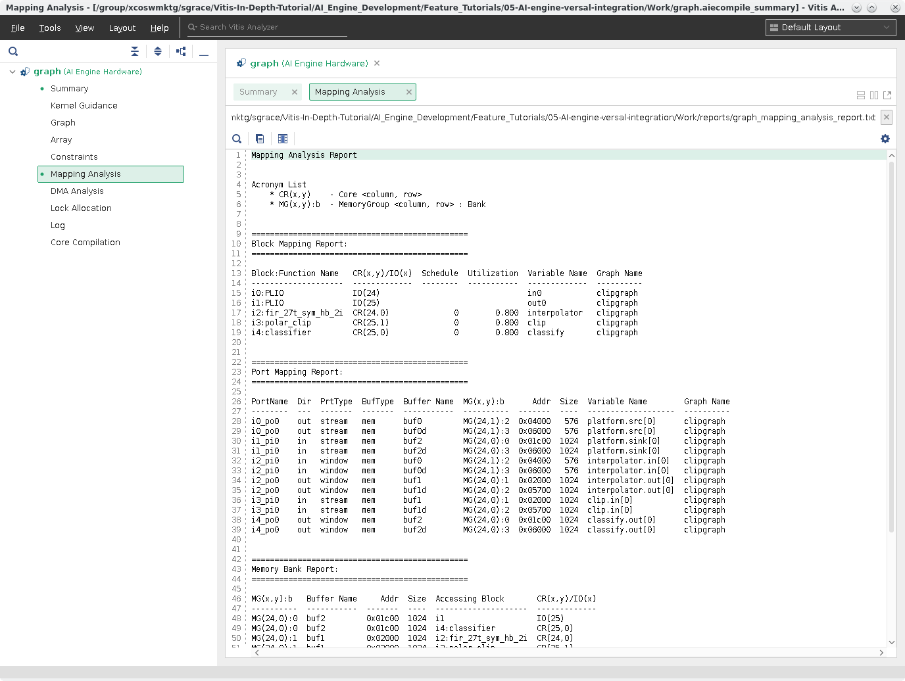
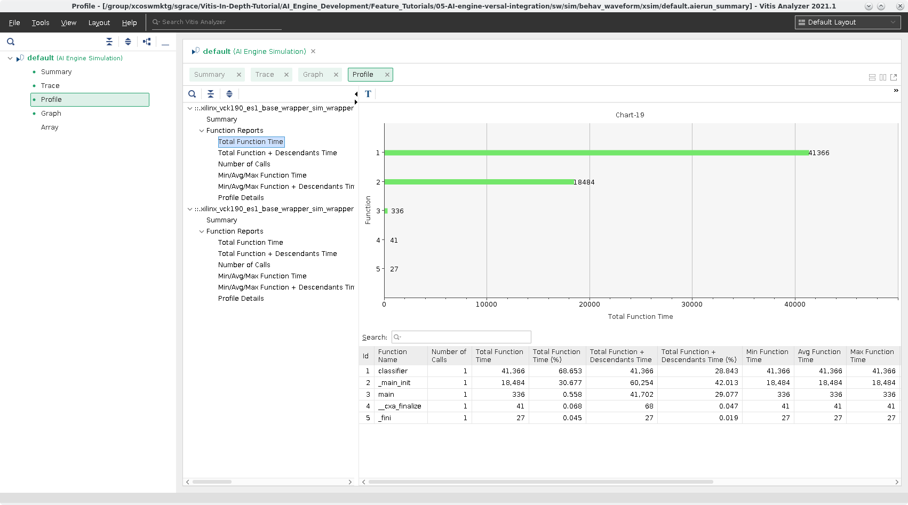

AI Engine Versal Integration for Hardware Emulation and Hardware¶
Introduction¶
Versal™ adaptive compute acceleration platforms (ACAPs) combine Scalar Engines, Adaptable Engines, and Intelligent Engines with leading-edge memory and interfacing technologies to deliver powerful heterogeneous acceleration for any application.
This tutorial demonstrates creating a system design running on the AI Engine, PS, and Programmable logic. The AI Engine domain contains a simple graph consisting of 3 kernels. These kernels are connected by both windows and streams. The PL domain contains data movers that provide input and capture output from the AI Engine. The PS domain contains a host application that controls the entire system. You’ll validate the design running on these heterogeneous domains by using first by emulating the hardware and then running on actual hardware.
This tutorial steps through hardware emulation and hardware flow in the context of a complete Versal ACAP system integration. A Makefile is provided, which can be modified to suit your own needs in a different context. By default the Makefile is set for hw_emu. If you need to build for hw, add TARGET=hw to the make commands.
IMPORTANT: Before beginning the tutorial make sure you have read and followed the Vitis Software Platform Release Notes (v2021.1) for setting up software and installing the VCK190 base platform.
Before starting this tutorial run the following steps:
Set up your platform by running the
xilinx-versal-common-v2021.1/environment-setup-cortexa72-cortexa53-xilinx-linuxscript as provided in the platform download. This script sets up theSDKTARGETSYSROOTandCXXvariables. If the script is not present, you must run thexilinx-versal-common-v2021.1/sdk.sh.Set up your
ROOTFS, andIMAGEto point to thexilinx-versal-common-v2021.1directory.Set up your
PLATFORM_REPO_PATHSenvironment variable based upon where you downloaded the platform.
This tutorial targets the VCK190 ES board (see https://www.xilinx.com/products/boards-and-kits/vck190.html). This board is currently available via early access. If you have already purchased this board, download the necessary files from the lounge and ensure you have the correct licenses installed. If you do not have a board and ES license please contact your Xilinx sales contact.
Objectives¶
After completing this tutorial, you should be able to:
Compile HLS functions for integration in the Programmable Logic (PL).
Compile ADF graphs.
Explore Vitis Analyzer to viewing the compilation and simulation summary reports.
Create a configuration file that describes system connections and use it during the link stage.
Create a software application that runs on Linux.
Package the design into run on hardware emulation and an easy-to-boot SD card image to run on hardware.
Tutorial Overview¶
Section 1: Compile AI Engine code using the AI Engine compiler, viewing compilation results in Vitis Analyzer.
Section 2: Simulate the AI Engine graph using the aiesimulator and viewing trace, and profile results in Vitis Analyzer
Section 3: Link the AI Engine kernels, and HLS PL kernels with an extensible platform provided.
Section 4: Compile the A72 host code.
Section 5: Create the bootable image.
Section 6: Run the hardware emulation, and view run summary in Vitis Analyzer.
Section 7: Run on hardware.
The design that will be used is shown in the following figure:

| Kernel | Type | Comment |
|---|---|---|
| MM2S | HLS | Memory Map to Stream HLS kernel to feed input data from DDR to AI Engine interpolator kernel via the PL DMA. |
| Interpolator | AI Engine | Half-band 2x up-sampling FIR filter with 16 coefficients. Its input and output are cint16 window interfaces and the input interface has a 16 sample margin. |
| Polar_clip | AI Engine | Determines the magnitude of the complex input vector and clips the output magnitude if it is greater than a threshold. The polar_clip has a single input stream of complex 16-bit samples, and a single output stream whose underlying samples are also complex 16-bit elements. |
| Classifier | AI Engine | This kernel determines the quadrant of the complex input vector and outputs a single real value depending which quadrant. The input interface is a cint16 stream and the output is a int32 window. |
| S2MM | HLS | Stream to Memory Map HLS kernel to feed output result data from AI Engine classifier kernel to DDR via the PL DMA. |
Section 1: Compile AI Engine code using the AI Engine compiler, viewing compilation results in Vitis Analyzer.¶
The first step is to take any v++ kernels (HLS C), and your AI Engine kernels, and graph then compile them into their respective .xo and .o files. You can compile the kernels and graph in parallel because they do not rely on each other at this step.
This tutorial design has 3 AI Engine kernels (interpolator, and polar_clip, classifier,) and two HLS PL kernels (s2mm and mm2s).
Compiling HLS Kernels Using v++¶
To compile the mm2s, and s2mm PL HLS kernels, use the v++ compiler command - which takes in an HLS kernel source and produces an .xo file.
To compile the kernels, run the following command:
make kernels
Or
v++ -c --platform $PLATFORM_REPO_PATHS/xilinx_vck190_es1_base_202110_1/xilinx_vck190_es1_base_202110_1.xpfm --save-temps -g -k pl_kernels/s2mm s2mm.cpp -o s2mm.xo v++ -c --platform $PLATFORM_REPO_PATHS/xilinx_vck190_es1_base_202110_1/xilinx_vck190_es1_base_202110_1.xpfm --save-temps -g -k pl_kernels/mm2s mm2s.cpp -o mm2s.xo
Looking at the v++ command line, you will see several options. The following table describes each option:
| Switch/flag | Description |
|---|---|
-c |
Tells v++ to just compile the kernel. |
--platform/-f |
Specifies the path to an extensible platform. |
-g |
Required for the hw_emu target to capture waveform data. |
-k |
The kernel name. This has to match the function name in the corresponding file defining the kernel. (E.g., For kernel mm2s the function name needs to be mm2s.cpp. |
-o |
The output file must always have the suffix of .xo. |
--save-temps/-s |
Saves the generated output process in the _x directory. |
Compiling an AI Engine ADF Graph for V++ Flow¶
An ADF Graph can be connected to an extensible Vitis platform. That is, the graph I/Os can be connected either to platform ports or to ports on Vitis kernels through the v++ connectivity directives.
An AI Engine ADF C++ graph contains AI Engine kernels only.
All interconnections between AI Engine kernels are defined in the C++ graph (
graph.h).All interconnections to external I/Os are fully specified in the C++ simulation testbench (
graph.cpp) that instantiates the C++ ADF graph object (this is strictly only used inaiesimulatorwhich is explained in Section 2). All platform connections from the graph to the “PLIO” map onto ports on the AI Engine subsystem graph that are connected via v++ connectivity directives.No dangling ports or implicit “connections” are allowed by
v++.Stream connections are specified through the
v++ --scoption, including employment of PL-based data movers, either in the platform or defined outside the ADF graph as Vitis PL kernels.
To compile the graph type to be used in either HW or HW_EMU, use:
make aie
Or
aiecompiler --target=hw -include="$XILINX_VITIS/aietools/include" -include="./aie" -include="./data" -include="./aie/kernels" -include="./" --xlopt=0 -workdir=./Work aie/graph.cpp
| Flag | Description |
|---|---|
| --target | Target how the compiler will build the graph. Default is hw |
| --include | All the include files needed to build the graph |
| --xlopt | Optimization of the kernel and graph code. Default is 1. |
| --workdir | The location where the Work directory will be created |
The generated output from aiecompiler is the Work directory, and the libadf.a file. This file contains the compiled AI Engine configuration, graph, and Kernel .elf files.
Vitis Analyzer Compile Summary¶
Vitis Analyzer is used to view the AI Engine compilation results. It highlights the state of compilation, display the graph solution in both the Graph and Array views, provides guidance around the kernel code, and allow you to open various reports produced by aiecompiler. Below is the graph.aiecompile_summary file generated by the aiecompiler, which is located in the Work directory.
The Summary View displays compilation runtime, version of the compiler was used, the platform targeted, kernels created, and the exact command-line used for the compilation.

Click Kernel Guidance. This view provides a list of messages (INFO, Warning, Critical Warning) with various info to help with optimizing, or using best practices for kernel development. By default, INFO messages are hidden.

Click Mapping Analysis. This report provides detailed mapping information the
aiecompilergenerates for mapping the graph to the AI Engine.
Click DMA Analysis. This is a text report showing a summary of the DMA accesses from the graph.

Click Lock Allocation. This shows the locks per buffer and where it is mapped in the ADF Graph.

Click Log. This is the compilation log for your graph.

Click Core Compilation. Shows the individual logs and command-line options for the individual Tile compilations. Below is an example of the kernel in Tile [25,0].


Note: The Graph View and Array View are presented in the next section.
Section 2: Simulating Graph and using Vitis Analyzer¶
After the graph has been compiled, you can simulate your design with the aiesimulator command. This uses a cycle approximate model to test your graph and get preliminary throughput information early in the design cycle, while the PL developers continue to work on the platform for the application.
Note: Simulating the design with VCD will increase simulation runtime. To learn more about this feature you can read this section here: AI Engine SystemC Simulator.
To run simulation you can run the command:
make aiesim
Or
aiesimulator --profile --dump-vcd=tutorial --pkg-dir=./Work
| Flag | Description | | —- | ———– | | –profile | Profiles All the kernels, or select kernels (col,row)…(col,row)| | –dump-vcd | Grabs internal signals of tiles and dumps it in a VCD file | | –pkg-dir | The Work directory |
When emulation is completed navigate to the
aiesimulator_outputdirectory from a terminal and run:cd aiesimulator_output; lsYou should see something similar to this:
aiesim_options.txt profile_funct_24_0.xml profile_funct_25_0.xml profile_instr_24_0.xml profile_instr_25_0.xml data profile_funct_24_1.txt profile_funct_25_1.txt profile_instr_24_1.txt profile_instr_25_1.txt default.aierun_summary profile_funct_24_1.xml profile_funct_25_1.xml profile_instr_24_1.xml profile_instr_25_1.xml profile_funct_24_0.txt profile_funct_25_0.txt profile_instr_24_0.txt profile_instr_25_0.txt
As you can see a variety of files, the ones prefixed with profile_ are the outputs of the profiling and calculated per tile. In this tutorial, the profiling is done for all tiles that are utilized, but you can limit to specific tiles by providing the row and column of the tile. To see more info about profiling with aiesimulator go here. You can open up these files to see what was calculated, but it is better to view it in Vitis Analyzer where it is all curated. The data directory is generated here with the output file(s) you have in the graph.cpp for the PLIO objects. Lastly, the default.aierun_summary is generated, which contains all the information generated by aiesimulator with profiling and trace info, and when opening this file in Vitis Analyzer will allow you to browse all the output files, and profile/trace data.
NOTE: The tutorial.vcd is generated on the same level as the ./Work directory.
Vitis Analyzer¶
You can then open up the generated default.aierun_summary from the aiesimulator_output directory for Vitis Analyzer.
To do this you run the command:
vitis_analyzer ./default.aierun_summary
With this tool you can look at a variety of views to debug, and potentially, optimize your graph.
Summary¶
This a general overview summary of running aiesimulator. As you can see in the following screenshot, it tells you the status, what version is used, time, what platform is used, and the command-line used to execute.

Click on Profile.
Profile¶
The Profile View provides detailed information collected during the simulation to give you an idea on cycle count, total instructions executed, program memory, and specific info per functions in the two tiles that the kernels are programmed.

This is the top-level view of the Profile and on the left column allows you to select one of many types of reports generated per function.
Select the first Total Function Time from this column you will see:

In this chart you can see what function is called the most, how long it took, etc. This can be useful in identifying if the tile is under or over utilized for your design.
Click on Graph.
Graph¶
This view gives an overview of your graph and how the graph is designed in a logical fashion. In this view, you can see all the PLIO Ports, kernels, buffers, and net connections for the entire ADF Graph.
Note: This view as well as the Array View have cross-probe selection. Meaning selecting an object in this view will select it in the other and vice versa.

Click on Array.
Array¶
The Array View gives you a logical device view of the AI Engine and how the kernels are placed and how they are connected to each other as well as the shim.

Cross probe to kernel and graph source files
The table at the bottom would show the following:
Kernels - The kernels in the graph.
PL - Shows connections between the graph and PLIO.
Buffers - Will show all the buffers used for inputs/outputs of the graph and the buffers for kernels.
Ports - Shows all the ports of each kernels and ADF Graph.
Nets - Shows all nets, named and generated, mapped in the ADF Graph.
Tiles - Shows tile data (kernels, buffers) of mapped tiles and their grid location.
Tip: To see more detailed information about these tables go to Chapter 9 - Section: “Viewing Compilation Results in the Vitis Analyzer”.
You can zoom into the view to get finer detail of the AI Engine and see how tiles are made up as seen in the following screenshot.
To zoom in, click and drag from the upper-left area you want to view to have a box show up around the area to zoom. Below is a zoomed in area too look at.

In this zoomed in location you can see how the kernels are connected to a variety of tiles and how the shim is connected to the PLIO ports of this design.
Click on Simulator Output.
Simulator Output¶
Lastly, the Simulator Output view and will print out the output.txt generated by the graph. This is a timestamped output.
Note: If you need to compare this file to a golden one, you’ll have to remove the -T ####ns- from the file.

If you need to make any changes to the ADF Graph or the kernels inside based upon results of the aiesimulator you can do so and rerun the compiler and view the results in Vitis Analyzer to see the changes you have made.
Once you’re done with the Vitis Analyzer, close it by going to File > Exit.
Section 3: Use V++ to Link AI Engine, HLS Kernels with the Platform¶
After the AI Engine kernels, graph, PL kernel, and HLS kernels have been compiled, and simulated you can use v++ to link them with the platform to generate an .xclbin.

v++ lets you integrate your AI Engine, HLS, and RTL kernels into an existing extensible platform. This step is where the platform chosen is provided by the hardware designer (or you can opt to use one of the many extensible base platforms provide by Xilinx) and v++ builds the hardware design for you in addition to integrating the AI Engine and PL kernels in the design.
You have a number of kernels at your disposal, but you need to tell the linker how you want to connect them together (from the AI Engine array to PL and vice versa). These connections are described in a configuration file: system.cfg in this tutorial shown below.
[connectivity]
nk=mm2s:1:mm2s
nk=s2mm:1:s2mm
sc=mm2s.s:ai_engine_0.DataIn1
sc=ai_engine_0.DataOut1:s2mm.s
| Option/Flag | Description |
|---|---|
nk |
This specifies the kernel and how many there are it be instantiated. For example, nk=mm2s:1:mm2s means that the kernel mm2s will instantiate one kernel with the name mm2s. |
stream_connect/sc |
This specifies the streaming connections to be made between PL/AI Engine or PL/PL. In this case, it should always be an output of a kernel to the input of a kernel. |
NOTE: The v++ command-line can get cluttered, and using the system.cfg file can help contain it.
For ai_engine_0 the names are provided in the graph.cpp when instantiating a PLIO object. For the design, as an example, this line PLIO *in0 = new PLIO("DataIn1", adf::plio_32_bits,"data/input.txt"); has the name DataIn1 which is the interface name.
You can see the v++ switches in more detail in the Vitis Unified Software Platform Documentation.
To build the design run the follow command:
make xclbin
Or
v++ -l --platform $PLATFORM_REPO_PATHS/xilinx_vck190_es1_base_202110_1/xilinx_vck190_es1_base_202110_1.xpfm s2mm.xo mm2s.xo libadf.a -t hw_emu --save-temps -g --config system.cfg -o tutorial.xclbin
| Flag/Switch | Description |
|---|---|
--link/-l |
Tells v++ that it will be linking a design, so only the *.xo and libadf.a files are valid inputs. |
--target/-t |
Tells v++ to build to hardware (which will build down to a PDI) or hardware emulation (which will build the emulation models) |
--platform |
Same as the previous two steps. |
--config |
This allows you to simplify the v++ command-line if it gets too unruly and have items in an .ini style file. |
Now you have a generated .xclbin that will be used to execute your design on the platform.
Section 4: Compile the A72 Host Application¶
After all the new AI Engine outputs are created, you can compile your host application by following the typical cross-compilation flow for the Cortex-A72. As you might notice, the host code uses XRT (Xilinx Run Time) as an API to talk to the AI Engine and PL kernels. Notice that in the linker, it is using the the libraries: -ladf_api_xrt -lxrt_coreutil.
Open
sw/main.cppand familiarize yourself with the contents. Pay close attention to API calls and the comments provided.Note that XRT is used in the host application. This API layer is used to communicate with the programmable logic, specifically the PLIO kernels for reading and writing data. To understand how to use this API in an AI Engine application refer to “Programming the PS Host Application”.
Open the
Makefile, and familiarize yourself with the contents. Take note of theGCC_FLAGS,GCC_INCLUDES.GCC_FLAGS: Self-explanatory that you will be compiling this code with C++ 14. More explanation will be provided in the packaging step.GCC_INCLUDES: Contains the list of all the necessary include files from the SDKTARGETSYSROOT as well as the AI Engine tools.
Close the Makefile, and run the command:
make host
Or
cd ./sw aarch64-xilinx-linux-g++ -Wall -c -std=c++14 -Wno-int-to-pointer-cast --sysroot=$SDKTARGETSYSROOT -I$SDKTARGETSYSROOT/usr/include/xrt -I$SDKTARGETSYSROOT/usr/include -I./ -I../aie -I$XILINX_VITIS/aietools/include -I$XILINX_VITIS/include -o aie_control_xrt.o ../Work/ps/c_rts/aie_control_xrt.cpp aarch64-xilinx-linux-g++ -Wall -c -std=c++14 -Wno-int-to-pointer-cast --sysroot=$SDKTARGETSYSROOT -I$SDKTARGETSYSROOT/usr/include/xrt -I$SDKTARGETSYSROOT/usr/include -I./ -I../aie -I$XILINX_VITIS/aietools/include -I$XILINX_VITIS/include -o main.o main.cpp aarch64-xilinx-linux-g++ main.o aie_control_xrt.o -ladf_api_xrt -lxrt_coreutil -L$SDKTARGETSYSROOT/usr/lib --sysroot=$SDKTARGETSYSROOT -L$XILINX_VITIS/aietools/lib/aarch64.o -o host.exe cd ..
The follow table describes some of the GCC options being used:
| Flag | Description |
|---|---|
-Wall |
Print out all warnings. |
-Wno-int-to-pointer-cast |
Warn about an integer to pointer cast. |
--sysroot |
Tells the compiler where to find the headers/libs for cross-compile. |
-std=c++14 |
This is required for Linux applications using XRT. |
Section 5: Package the Design¶
With all the AI Engine outputs and the new platform created, you can now generate the Programmable Device Image (PDI) and a package to be used on an SD card. The PDI contains all executables, bitstreams, and configurations of every element of the device, and the packaged SD card directory contains everything to boot Linux and have your generated application and .xclbin.
To package the design, run the following command:
make package
Or
cd ./sw v++ --package -t hw_emu \ -f $PLATFORM_REPO_PATHS/xilinx_vck190_es1_base_202110_1/xilinx_vck190_es1_base_202110_1.xpfm \ --package.rootfs=$PLATFORM_REPO_PATHS/sw/versal/xilinx-versal-common-v2021.1/rootfs.ext4 \ --package.image_format=ext4 \ --package.boot_mode=sd \ --package.kernel_image=$PLATFORM_REPO_PATHS/sw/versal/xilinx-versal-common-v2021.1/Image \ --package.defer_aie_run \ --package.sd_file host.exe ../tutorial.xclbin ../libadf.a cd ..
NOTE: By default the --package flow will create a a.xclbin automatically if the -o switch is not set.
The following table describes the packager options:
| Switch/flag | Description |
|---|---|
rootfs |
Points to the formatted image of the platform. |
image_format |
Tells packager what the image format is. |
boot_mode |
Signifies how the design is going to be run. |
kernel_image |
Points to the Image file created by Petalinux. |
defer_aie_run |
Tells packager at boot to not start the AI Engine and let the host application control it. |
sd_file |
Tell the packager what file is to be packaged in the sd_card directory. You'll have to specify this multiple times for all the files you want packaged. |
Section 6: Run Hardware Emulation¶
After packaging, everything is set to run emulation. Since you ran aiesimulator with profiling enabled, you can bring that to hardware emulation. You can pass the aiesim_options.txt to the launch_hw_emu.sh which will enable the profiling options used in aiesimulator to be applied to hardware emulation. To do this, you will just add the -aie-sim-options ../aiesimulator_output/aiesim_options.txt.
To run emulation use the following command:
cd ./sw ./launch_hw_emu.sh -aie-sim-options ../aiesimulator_output/aiesim_options.txt cd ..
When launched, use the Linux prompt presented to run the design.
Execute the following command when the emulated Linux prompt displays:
cd /mnt/sd-mmcblk0p1 export XILINX_XRT=/usr dmesg -n 4 && echo "Hide DRM messages..."
This will set up the design to run emulation and remove any unnecessary DRM messaging.
Run the design using the following command:
./host.exe a.xclbin
Note: The design is running with dumping VCD, which will extend emulation time. It may look like it is hung, but it is not.
You should see an output displaying TEST PASSED. When this is shown, run the keyboard command:
Ctrl+A xto end the QEMU instance.To view the profiling results and trace in Vitis Analyzer run the command:
vitis_analyzer sw/sim/behav_waveform/xsim/default.aierun_summary

As you can tell from opening up this run summary, that it is the same layout as the one from aiesimulator.
Click on Trace. This will open up the VCD data (as defined in the
aiesim_options.txt). This gives detailed information about kernels, tiles, and nets within the AI Engine during execution. Here you can see stalls in regards to each kernel and can help you identify where they are originating.
Click on the Profile. This will bring up the same view as shown for the profiling of the
aiesimulator, but now it will have information gathered from running hardware emulation.Click on Total Function Time you will see this:

As you can tell the values here differ from the one used in
aiesimulator.
The final two views: Graph and Array are same to what you saw in the aiesimulator run summary.
Open the
aiesimulatorrun summary by going to File > Open Summary and navigating to theaiesimulator_outputdirectory and clicking ondefault.aierun_summary.
Explore the two reports and take notice of any differences and similarities. These will help you debug and optimize your design.
Close out of the Vitis Analyzer and build for hardware.
Section 7: Build and Run on Hardware¶
To build for hardware run the following command:
make xclbin TARGET=hw
Or
v++ -l --platform $PLATFORM_REPO_PATHS/xilinx_vck190_es1_base_202110_1/xilinx_vck190_es1_base_202110_1.xpfm s2mm.xo mm2s.xo libadf.a -t hw --save-temps -g --config system.cfg -o tutorial.xclbinThen re-run the packaging step with:
make package TARGET=hw
Or
cd ./sw v++ --package -t hw \ -f $PLATFORM_REPO_PATHS/xilinx_vck190_es1_base_202110_1/xilinx_vck190_es1_base_202110_1.xpfm \ --package.rootfs=$PLATFORM_REPO_PATHS/sw/versal/xilinx-versal-common-v2021.1/rootfs.ext4 \ --package.image_format=ext4 \ --package.boot_mode=sd \ --package.kernel_image=$PLATFORM_REPO_PATHS/sw/versal/xilinx-versal-common-v2021.1/Image \ --package.defer_aie_run \ --package.sd_file host.exe ../tutorial.xclbin ../libadf.a cd ..
When you run on hardware, ensure you have a supported SD card. Format the SD card with the sw/sd_card.img file. Then plug the SD card into the board and power it up.
When a Linux prompt appears, run the following commands:
dmesg -n 4 && echo "Hide DRM messages..." cd /mnt/sd-mmcblk0p1 export XILINX_XRT=/usr ./host.exe a.xclbin
You should see TEST PASSED. You have successfully run your design on hardware.
IMPORTANT: To rerun the application you need to power cycle the board.
Summary¶
In this tutorial you learned the following:
How to compile PLIO and PL Kernels using
v++ -c.How to link the
libadf.a, PLIO and PL kernels to thexilinx_vck190_es1_202110_1platformHow to use Vitis Analyzer to explore the various reports generated from compilation and emulation/simulation
How to package your host code, and the generated
xclbinandlibadf.ainto an SD card directoryHow to execute the design for hardware emulation
How to execute the design on the board
To read more about the use of Vitis in the AI Engine flow see: UG1076: Versal ACAP AI Engine Programming Environment Chapter 13: Integrating the Application Using the Vitis Tool Flow.
© Copyright 2021 Xilinx, Inc.
Licensed under the Apache License, Version 2.0 (the “License”); you may not use this file except in compliance with the License. You may obtain a copy of the License at
http://www.apache.org/licenses/LICENSE-2.0
Unless required by applicable law or agreed to in writing, software distributed under the License is distributed on an “AS IS” BASIS, WITHOUT WARRANTIES OR CONDITIONS OF ANY KIND, either express or implied. See the License for the specific language governing permissions and limitations under the License.
XD002 | © Copyright 2021 Xilinx, Inc.